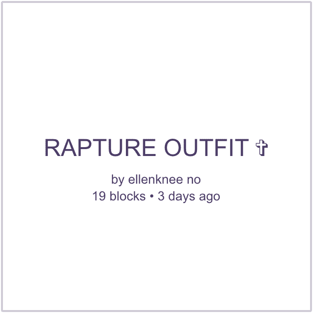
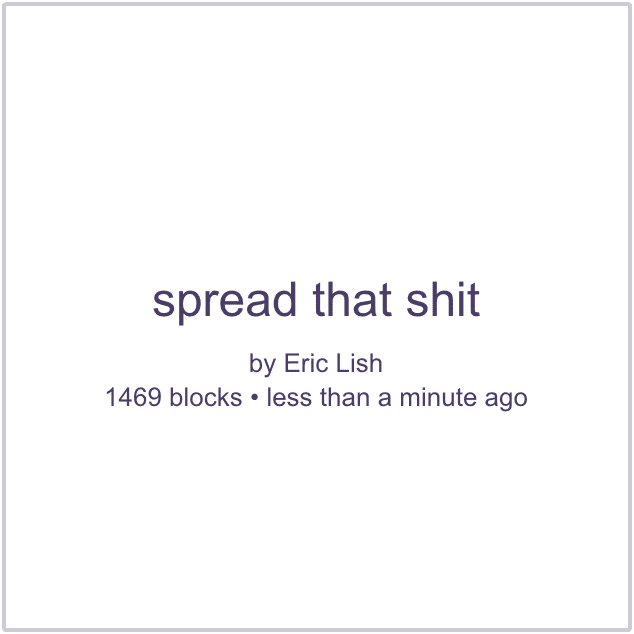
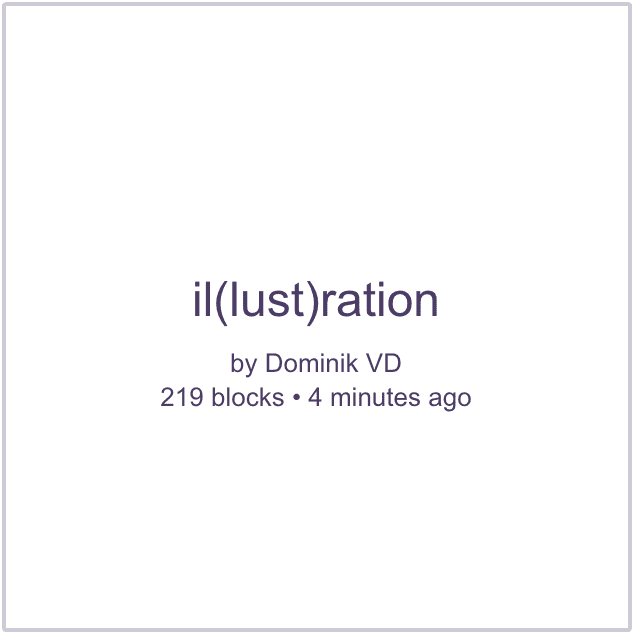
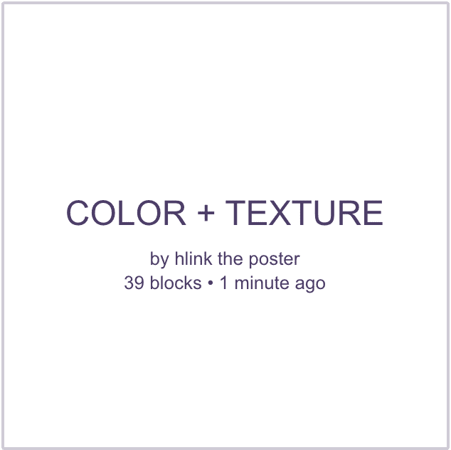
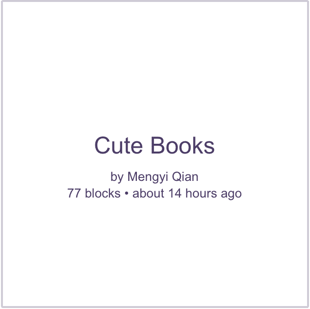
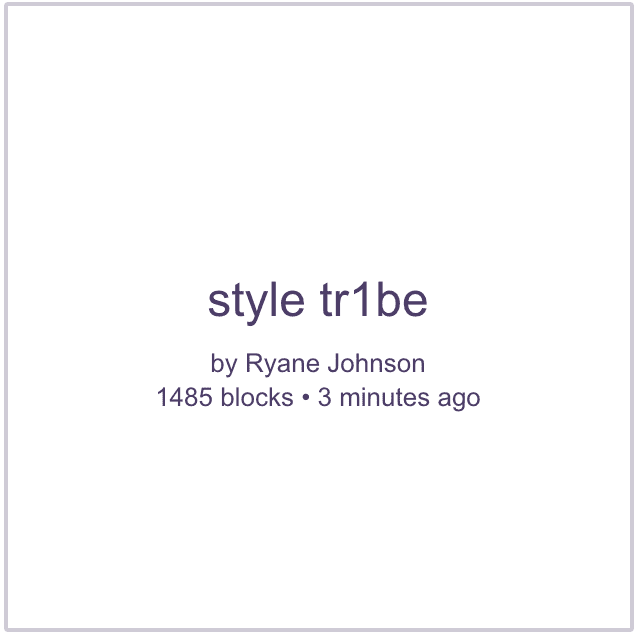
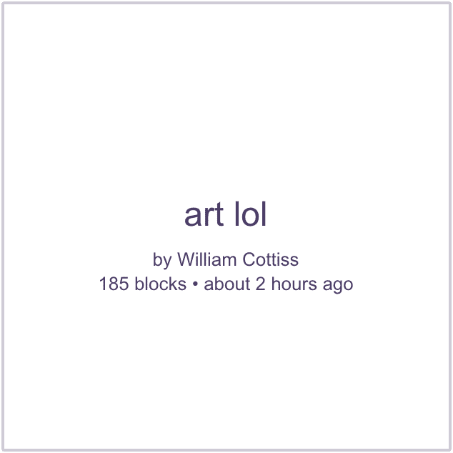
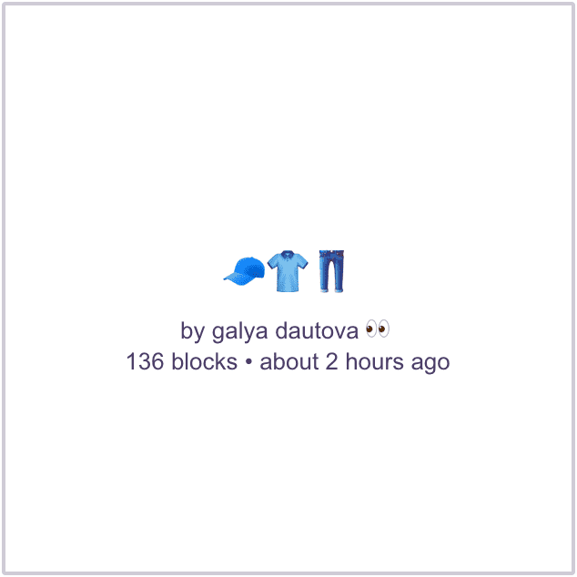
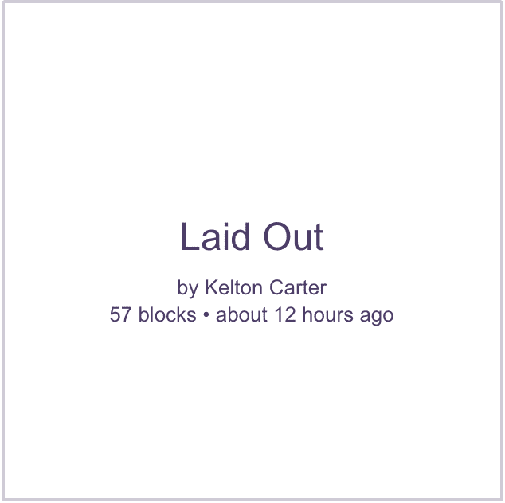
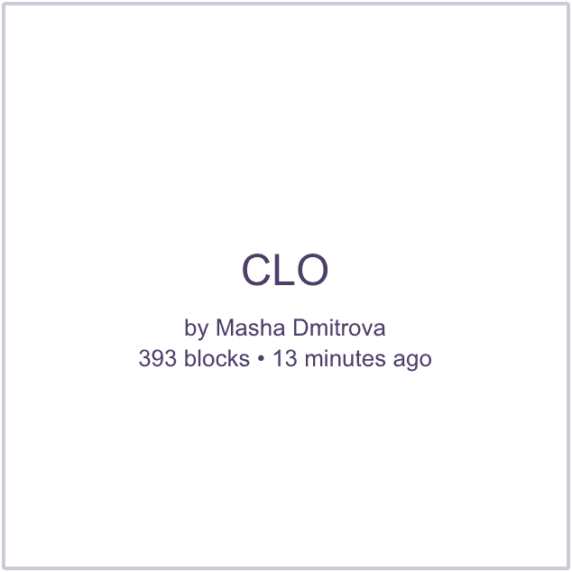

|Insert Title Here
Ordinary words convey only what we know already;
it is from metaphor that we can best get hold of something fresh.
How can you recognise a character gifted with an exceptional mind in a mainstream movie series? Simple. By their memory palace. Almost every fictional genius – Sherlock, Hannibal, Mentalist – will be portrayed as a master of the loci (latin for 'places') method. Visual possibilities of representing a Memory Palace on the screen or any other popular culture canvas made the proliferation of its concept into a viewer's mind quick and widespread.
However, the loci method is by no means a fruit of modern screenwriter's mind. It originated in the Ancient Greece (its invention and development is attributed to a Greek poet Simonides of Ceos), at a time where memory tied to a human mind, not to its paper or digital assistant, was held way more precious than it is today. It was the age of information learned by heart, but not for mere gimmicky show-off we see in modern movies. The Greece of Socrates was the kingdom of long-lost oral culture, the house of rhetoric as an artform. A place where memorising was considered to play a major part in the process of {formulating one's thoughts}. Contemporaries treated the human mind not as an information container, but as a crucible for calcination of new ideas ✳.
Unsurprisingly, the busy minds of Ancient Greeks became fertile grounds for the loci method popularisation. Its concept is rather easy to grasp. The Mind Palace technique lies in projecting information we wish to memorize onto objects and rooms in an imagined Memory Palace of an individual's design. The space can be anything, not necessarily a palace, but a clearly imagined territory that is characterised by comfort or familiarity. The system is well described on a 'Temple Of Time' visualisation drawn by Emma Willard, a nineteenth century feminist scholar devoted to representation of visual mnemonics✳. Using a structure of a temple Willard, a skilled cartographer, aptly mapped chronology to geography. The method is plain. Centuries (represented by pillars) are tied through colour coding and spatial position to most prominent thinkers of a given age. These are further divided into scientific and artistic categories (statesmen, philosophers, warriors) through natural architectural elements of the temple. A simple system of meaning allows for easy organization of information and lasting memorisation.
Many centuries after Simonides, his loci method, or at least its concept, was still in use. In the 16th century Giulio Camillo Delminio worked on his project 'Theatro Della Memoria' ('The Memory Theatre') in which, by associating information to mental spaces, he wanted to record all of human knowledge. However, there was a change of attitude. Camillo wanted to give his project a physical form. He wanted to build an actual palace for human memory. Unfortunately, as it often happens with grand ideas and their inventors, Camillo struggled financially. Having no luck finding a patron and running out of time, the renaissance thinker only managed to create a wooden model of the Theatre.✳.
Camillo was not the only one who dreamt of giving a physical form to memory. With the arrival of widespread print, improving access to education and paper, humans started outsourcing their memory palaces. That is hardly a surprise – non-physical memory palaces require a substantial time investment in order to become functional (and still might not pay off). Moreover, the more prosthetic (stored outside of a body or mind, physically external) options for knowledge recording appear, the more we tend to lose trust in our own mnemonic capabilities.
In the Renaissance and Enlightenment one of the more popular solutions to the risks of forgetfulness was a commonplace book ✳. It was a simple notebook where all things encountered (poems, recipes, conversations) were noted down and stored for later retrieval. The commonplace book was a paper-based predecessor to any modern bookmarking platform.
About a century ago we have collectively gathered so much that not only a single mind, not a single notebook – a whole library wouldn't suffice to store it. An arrival of new informational era was in the air. The great minds of the time felt it and started designing their proposals. Almost a hundred years before the Web as we know it, the rising sea of information was calling for reconsideration of how the cognitive overload was managed. In 1934, Paul Otlet, a visionary archivist, saw it most clearly:
Humanity is at a turning point in its history. The mass of available information is formidable. New instruments are necessary for simplifying and condensing it, or the intellect will never know how to overcome the difficulties which overwhelm it, nor realize the progress that it glimpses and to which it aspires.✳
Otlet, like Camillo before him, undertook another mission of recording and storing all of human knowledge in what he called Mundaneum. The partly realized space (initially localised in 150 rooms of the Palais du Cinquantenaire) was supposed to connect libraries, archives, governments, universities and individuals and through the Universal Decimal Classification organize and make available to the public the totality of human intellectual achievement. Similarly to what we see in Willard's sketches or Camillo's plans, Otlet wanted the architecture of the Mondotheque to reflect the organization of information stored within it. With the support of the Belgian government and collaboration with architectural giants (such as Le Corbusier), the project was supposed to be realized into a monumental ziggurat ✳ – a physical temple of collective intellectual achievement. Nazi regime and the turbulent 1940s rendered the complete realisation of Mondotheque impossible and nowadays the grandeur of Otlet's legacy has been reduced to an archive and an exhibition space run by a non-profit organization in Mons, Belgium.
A year after Otlet's death, in 1945, Vannevar Bush, an American engineer, inventor and scientist, wrote his seminal article 'As We May Think', in which he suggested that the memory revolution will not happen from within us, but through interaction with machines. He hypothesised a concept of the Memex – an electromechanical device that would function as an enlarged intimate supplement to one's memory ✳. The illustration of the idea was built around a humble desk supplemented with screens and complex machinery that would store all the individual's research, books, annotations and records and allow for a system of combining information similar to the one happening in human mind – but with reliable storage and seamless retrievability. In both its concept and construction, Bush's Memex is pleasingly related to one of Otlet's ideas. To allow for easy individual use of what Mundaneum had to offer, Otlet designed Mondotheque – a home multimedia workstation that could be at the same time archive, instrument, workstation, catalog and broadcasting machine ✳ and was connected to the universal library of Mundaneum ✳.
Not long after Otlet pioneering the concept of a search engine and Bush's proto-hypertextual ideas (that inspired legends like Ted Nelson or Douglas Engelbart), an informational miracle they both foresaw arrived. The Internet was finally here. The World Wide Web came to help us navigate the stormy sea of data, promising the infinite storage, eternal archivisation and dawn of the Age Of Information. And we entered it happily and greedily – straight into the Age Of Forgetfulness, where no one has to remember anything. Our prosthetic techno-limbs remember for us.
And I am worried. When I want to cite a poem, I just look it up on my phone, it is saved somewhere in the digital notes. I don't take the effort to memorise it. Instead of storing it in my mind, I store it on a bookmarking platform. Instead of remembering the information itself, I remember its online storage index. I am anxious about how much I actually KNOW without my many prosthetic assistants. Two decades ago my mom remembered dozens of phone numbers, never relying on a notebook. I, on the other hand, remember only my mom's and my own digits. But then again – is there anything wrong with that? It is a reliable and comfortable solution. Why not use it?
We tend to not realize how much the way we store and especially categorise information has direct implications on our understanding of the world. There are consequences to storing information outside of our own minds and retrieving that information most usually requires the use of some form of a word search – hence continuous reliance on the outsourced mind asks for an evaluation of how it is categorised.
So far I have merely expressed my doubt about excessive reliance on prosthetic knowledge. In Plato's Dialogues however, we can find a familiar character, Socrates, who through a short story expresses his distrust towards writing in general:
Theut, or Hermes, the alleged inventor of writing, presents his invention to the pharaoh Thamus, praising his new technique that will allow human beings to remember what they would otherwise forget. But the pharaoh is not so satisfied. My skillful Theut, he says, memory is a great gift that ought to be kept alive by training it continuously. With your invention people will not be obliged any longer to train memory. They will remember things not because of an internal effort, but by mere virtue of an external device.✳
Socratic critique of writing is strikingly clear. He believed that a thought alienated from its physical thinker will lose its value, context and credibility. What if Socrates was right? Perhaps writing in general, transforming an internalised memory palace into an outsourced digital note, has led to a complete alienation of knowledge from the mind creating it. As Umberto Eco suggests, Writing [is] dangerous because it decreased the powers of mind by offering human beings a petrified soul, a caricature of mind, a vegetal memory.✳. Despite all warnings, we got well used to writing. Socrates might have had his complaints, but the role of writing in the development of our civilisation is undisputable. However, little did he know how much in accordance with his predictions would humanity rely on literal 'external devices'. The vocabulary used by Eco to express doubts about writing – petrified, caricature, vegetal – suggests a loss of aliveness of information and can be easily aaplied to descriptions of a digitally outsourced mind. The mnemonic catastrophe feared by Socrates might not have been brought on in the past by paper-based writing, but possibly in the future by its computerized descendants.
One thing is for sure – no earthly philosophy could stop us from indulging in the prosthetic craze even further. As of 2020 Pinterest has 442 million monthly active users worldwide✳. Heavily used and neatly organized notemaking software such as Evernote or Notion is a pride of any efficient enterpreneur. In the Internet Age each one of us can build their digital memory palace or online Mondotheque without being inhibited by physical space, architectural or financial constraints. Giulio Camillo Delminio could realize his 'Theatro Della Memoria' with a standard laptop and a decent Internet connection. And surely, similarly to us, regular web dwellers, he would take his chance in doing so.
Throughout the years bookmarking arose as the solution for effectively storing the material encountered online. The invention of a computer changed everything about information storage. The Desktop Metaphor took us from physical folders to 2D icons, from cork boards to their Pinterest descendants, from dreams of Memex and Mondotheque to reality. Instead of idiosyncratic methods for finding back the archived knowledge, everyone with a computer suddenly had an access to a retrievable and searchable ocean of information.
And as it often happens with humanity, we have pushed it too far. The quantity of information storming us on a daily basis is overwhelming, yet we crave it anyway. We hoard it and are addicted to leaving 'for later'. 'To-Watch' or 'To-Read' lists are strangers to nobody.
Soon enough, seizing the market need, many companies released what could be called a Knowledge Management Platform or a Social Bookmarking Service. From Del.icio.us of 2003, through Pinterest.com in 2009, to one of the most recent – Are.na of 2014, in the last two decades websites allowing users to save all the texts, websites, images and videos they stumbled upon in the World Wide Web started springing up like organisational mushrooms after a long info-rain.
At first glance, all the different platforms seem like an info-hoarder's paradise. They provide infinite storage space (often for free), allow for browsability and searchability, give structure to user's contents and even suggest other web ephemera that might be in user's field of interest.
However, at a second glance, the design of all the platforms is disappointingly ubiquitous. After all, the infrastructure of prosthetic knowledge spaces influences the infrastructure of our minds. And yet, this is what we get:
Light background, grid, tagged categories. Coloured rectangles all over. A structure reminiscent of Jacque Tati's cubicle offices in Playtime. Users have no decision over how their channel (board, collection, folder – each platform carries their own synonym) is displayed. There is not much place for idiosyncratic organization systems, because the platforms have a standardised structure and, as it is the case with Pinterest, the platform even adds their own tags and labels to any connection, so that its AI can easily recognise, categorise and recommend any piece of information to another user whose 'interest field' it might fall into.
It needs to be acknowledged that from the technological point of view those are necessary organisational measures, rendering hosting a userbase numbering in thousands or even millions possible. And yet, with all the ways in which the social bookmarking platforms position themselves as a very personal, 'your' space on the Internet, one must question the amount of autonomy and control over the content that is given to the user. The system is not custom-made to fit the needs of human memory, but to serve searchability and retrievability functions of a machine. Before the age of the Internet, during the reign of the commonplace book, people had to come up with their own classification methods, centering their prosthetic knowledge infrastructure around the idiosyncratic ways in which their mind intuitively works. By now machines became a basic organisational tool of our reality. They operate on zero-one calculations, which means that every time we put something into the digital we need to translate it into the binary, so that the machine can understand. The computer world requires an unambiguous tagging system of what it is supposed to be able to find back later.
And here lies the cognitive problem. Our reality is far from binary. The disambiguation process all the information goes through before entering the digital world, impact us when we intake that information and take it back into reality. Through interaction with a digital prosthetic memory, our mind is in a way dehumanised of its ambiguous qualities. It is pre-gridded, pre-coded , pre-classified and conditioned to categorise like a machine even after leaving the digital realm. Making us slowly lose the ability to conceptually grasp the grey areas of the world.
Is there then a hope for autonomy under the machinal regime of bookmarking? In an environment so hostile to creation, there is but one unexpected bastion of complete user freedom. The collection names. It is only through the input fields that the user can express himself, give context, gain ownership of the gathered material.
Creating a new board or a channel is a relatively simple task. However, just between the two platforms of Pinterest and Are.na, many differences can be found.
| PLATFORM | ARE.NA | |
|---|---|---|
| A collection of various types of contents | Board | Channel |
| individual piece of content such as an image, link, text | Pin | Block |
| Spatial orientation | 3D | |
First of all: the spatial terminology. It goes beyond the spatiality of the concept in the name itself (physical 'arena' to which 'Are.na' hints, being an architectural piece with a purpose of collective display and personal entertainment relates beautifully to the concepts of the digital 'Are.na'). Name such as 'Are.na' seems to, at least superficially, operate on a higher level of conceptual refinement, relating personal knowledge base to a big spatial concept, a possibility financially unattainable for an average citizen. That decision is of importance that should not be overlooked. As George Lakoff and Mark Johnson point out in Metaphors We Live By, humans tend to treat the concept of their spatial positioning as one of the most basic linguistic structures of understanding the world around them.
Contrary to Are.na, Pinterest chooses a two-dimensional metaphor. It is an easy translation of basic, feasible reality. Anyone can have a simple pinboard, it is cheap enough and achievable without the rich imaginative possibilities of the digital environment. A 'channel' however, that presents the user with some spatial grandeur, comparing knowledge repository to a piece of architecture (taking us a little back to the similarly architectural memory palace method) Building a space is a grander gesture than pinning notes to a cork (or pixel) board.
As shown above, when a user wants to create a new board on Pinterest, he is already nudged in a direction of a type of a name he should give to his board ('places to go', 'recipes to make'). Such suggestion might seem minor, but it instantly positions the user in a subordinate position towards what kind of content is expected or native to the platform ✳. The completely empty (empty as in non-suggestive, conceptually neutral) input field of Are.na might frighten some users with its unlimited possibility, but for many more it encourages naming the channel in whatever way desired. Another curiosity found on Are.na is the small, barely visible grey dot on the right side of the input field, on which I will elaborate later.
Apart from the main input field, the difference between Pinterest and Are.na can be seen in what is suggested by the platform to complete the name. In the case of Pinterest, the website suggests adding a date – something way more quantitive and machine-oriented than a field of 'Description' offered by Are.na.
The final element of setting up a new channel is deciding the level of its privacy. Pinterest gives two options: Public (everyone can see the content) or Closed (only the creator can see the content) , while Are.na offers Open (a collaborative novelty in which everyone can see and add the content), Closed (everyone can see the content, only the creator can change it) and Private.
It seems that Are.na is a platform that already takes some well-thought-through steps towards providing a structure that improves on its predecessors (such as Pinterest) and using its highly designer/researcher oriented userbase, opens more mindful ways of navigating the Internet. Furthermore, the channel names, which are the main focus point of the following analysis, seem to play a more central role on Are.na than on any other platform. A channel is not represented by a collage of miniatures of its contents, but by the name its creator gave it. Name is king. All the above mentioned arguments and perhaps a hint of personal bias (Are.na is my tool of choice for digital hoards) are the reasons behind the continuation of my analysis within the environment of Are.na.
Let us start with a formality of an introduction. What exactly is Are.na? It seems to be a phenomenon that even Are.na's very creators have always struggled to define. A whole open channel has been devoted to trying to characterise what the platform really is. In the description we can read a note from Charles Broskoski (one of many Are.na's founders):
One thing we have struggled with since Are.na was founded is how to describe it. I'm curious how other active members of Are.na describe it to their friends.
On '** How do you describe Are.na at a party?✳' we can find a selection of definitions provided by different users, which I divided into four categories:
As writer Katharine Schwab notices, this difficulty in describing exactly what Are.na is has become part of its allure✳. However, in its most boiled-down, simplified definition, Are.na is a social bookmarking platform. It relies on a clean and simple design and a lack of ads. Its creators and developers are an active part of the community, which is invited to build the platform with them through suggestions shared on a Slack group or direct contact on the open channels. Are.na's userbase consists mostly of artists, designers and researchers, who take a very curatorial approach to what is added to the platform, where it is stored and how it is labelled, thus providing a surprising quality of relevant content, for which the platform is highly praised by its audience.
Hopefully, by now the concept of what Are.na is has become fairly familiar. I believe that the inspiring environment that Are.na's users are so grateful for has been largely achieved through the peculiar naming systems within the platform. In order to show that, an in-depth individual channel analysis has to be conducted.
By default, the first thing a viewer can see about the channel is its name and name of the channel's creator. That results in a striking difference between a grid of Are.na channels and Pinterest or Weheartit collections.
On Are.na the name of a channel is in a way its most important identifier. The designers of the platform chose not to show a miniature of its content (as opposed to many other social bookmarking websites), but use the seductive character of channel's nomenclature as a click incentive. The name is not a mere label, but an important signpost for the user encountering a channel. The name is the only tool helping the user in making the decision of whether he should or should not enter the collection. Hence, the user-channel encounter happens as follows:
Firstly, the viewer sees the channel's name, without any idea of its visual contents. Next, he makes an assumption about the contents of the channel. If he considers the name 'charged' with enough potential to spark his curiosity, he decides to enter its universe. Finally, his expectation based on the name can be confirmed or playfully subverted.
Such mysterious encounters with encapsulated information have roots way deeper than it might be expected. While conducting research for this paper, in 'The Book' by Amaranth Borsuk, I stumbled upon a description of an ancient Sumerian Bulla. To my own surprise and embarassment, I have never heard of it before. And yet, there it was. A fascinating clay artifact from the dawn of the age of writing. I was pleased to notice an uncanny visual similarity between the way an Are.na channel is 'packaged' and the way a Sumerian Bulla was constructed. Before writing was invented, trade used to be conducted by very physical means. Sets of clay tokens (equivalent of Are.na's blocks), each representing a different commodity, were exchanged. To avoid their switching or removal, the tokens were put into a hollow clay bulla (equivalent of Are.na's channel). As soon as they were in the sealed bulla, no one could tell what kind or how many of them are stored there, so to allow for easy recognition, their shapes were casted into the sides of the ball, together with an imprint of the bulla's creator✳ (equivalent of Are.na's username). Later Sumerians realized that the imprinting of the token shape renders both the bullae and the tokens unnecessary and they started carving the previous token symbols into a flat clay tablet instead, thus giving us writing.
There is an undeniable conceptual and visual similarity between this ancient box of content and its modern version. It is fascinating to see this crucial ancient artefact so pleasantly reflected in a modern social bookmarking website. And it is at least equally intriguing to observe how the digital tokens the users collect (images, texts, videos) are impacting their linguistic 'imprint' on the channel's front surface – its name. Clearly, there are no new visual structures under the sun.
Are.na's approach to building a channels steers us quite close to the way a bulla functioned. There are two moments created in both instances. A moment of ownership and a moment of mystery. The human element or the moment of ownership comes from the personal imprint of bulla's creator in clay or prominent display of the username on the channel miniature. Mystery is even more important here. One does not interact with the content itself (tokens/blocks), but their half-material substitute (token's imprints/channel names). On the fore of the channel there is a suggestion of its contents expressed through a name – in a bulla that suggestion is a clay imprint of the contained tokens. In both situations that imprint has a dual function. On one hand, it serves as a reminder or a note for the author – so that he remembers what he has put into the bulla or the channel. On the other, it creates a moment of friction for the visitor. He receives the channel-bulla and before opening can judge its contents only by the clay imprint or its equivalent – the name. Through Are.na's channels construction a peculiar dialogue between the author-user and visitor-user emerges. A communication with an ancient origin, frozen in time and space.
Are.na has a strong designer / artist / researcher oriented community. Thanks to that proximity of interests, even in an ocean of thousands of channels✳, each with its own special name, an interesting set of channel types emerges.
Generally, based on content and naming combinations, five channel types can be distinguished: 'Regular', 'Remix', 'Method' (answer seeking and question seeking) and 'Chaotic Energy'.
The first kind, 'Regular', is quite obvious and frankly – disappointing. It is, in Charles Broskoski's own words, the only way to misuse Are.na✳. This naming convention aligns with predictability, standardisation and 'what you read is what you get' rule. It is the case when a user simply labels a channel. A collection of favourite typefaces will be simply 'Typography'. A fashion channel is revealed as 'Fashion'. And a collection of interesting dinosaur pictures shall be 'Cool Dinosaurs'. In this case there is no playful dynamic between the user-author and the user-visitor. It greatly supports searchability and gives the user exactly what he might have expected – if he is looking for illustration moodboard, he gets an illustration moodboard. Any chance for serendipity is squeezed out of the equation.
The second type –'Remix' – that's where something more engaging starts to happen. Here, a few kinds of recognisable channel patterns can be observed. Let us focus on three of them – Fashion Channels, Layout Channels, Illustration Channels – and what kind of names are they given by the users.
| FASHIONCHANNELS | LAYOUTCHANNELS | ILLUSTRATIONCHANNELS |
|---|---|---|
|  |  |
|
|  |  | |
|  | ||
|  | ||
|  | ||
 |
 | |
|  |  | |
|  |
None of these channels give away any of their contents straightforwardly. Their authors, by means of pun, emojis, inside jokes or domain jargon, put on a performance of alternative names. In a 'Remix' channel the user-visitor can suspect the 'hidden' content category to be simply 'Fashion', but has a chance to firstly be intrigued by the name or connect it to something unexpected, while the author-user can use the name (such as 'alienCouture') as the clue to reading the intended aura of the channel that goes beyond a limiting label of 'Fashion Channel'. However, the trick of the trade is not to give a channel a completely arbitrary name. The name has to, like a pun, on some more or less abstract level actually relate to the standardised content category. User-authors come up with a variety of methods. There are names that describe the content a bit less obviously, such as 'Cute Books' as a name for a collection of book layouts. There are plays on mis-spelling the name ('make it fasHiUn'), shortening it ('CLO'), using special signs or numbers ('b000k'), finding word within words ('il(lust)ration'), playing around with related terminology ('spread that shit') or even illustrating the channel's content by emoji ('üìñ') or typography ('00'). The possibilities are endless and fun to read. The channel authors seem to race against each other in coming up with more and more punny and alternative names that relate to a standardised content category, but at the same time are as far away as possible from it. Incidentally, the further away from the regular label the name is, the more difficult it is for a computer to read.
The more strange, poetic and abstract the name, the more non-machinal and hence more human it becomes. All these naming patterns might suggest the community's subconscious revolt against searchability, an unwillingness to be 'keyworded'. Indeed, if we look at a simple label of 'Book' (for example for a collection of 'Want To Read' list), many possibilities of re-naming it can be immediately thought of.
From all these names only the first three are dictionary-ready. Of course, it doesn't mean that the rest is impenetrable for a search engine, surely they can be optimised to be 'findable'. Google Search understands 'B00ks' or 'b(ooo)k', but not '|3OOk'. Only some level of human-only entry is secured.
However, the reason for alternative names doesn't have to be a softcore version of human vs machine warzone. What author-user of these channels does is basically re-naming an existing category, trying to find a new angle of looking at 'another layout moodboard'. The user-visitor can still understand what these collections might be about. However, through the name, an interesting edge, certain friction is added that positions him into a specific framework of understanding the context of that channel and its creator. Naming is an initiatory gesture that applies context to all the contents of the channel – collected texts, links and visuals. It becomes the key to reading the collection. After all, the language we use to describe reality, has a great impact on our perception, which was proven in an experiment by Elizabeth Loftus and John Palmer:
After a group of students watched the same series of traffic accidents, they were asked how fast the cars were going when the accident occurred. When the cars were described as having “contacted” one another, the students estimated their speed to be thirty-two miles an hour, whereas another group estimated that the cars were travelling at forty miles an hour when they were described as having “smashed” one another.✳
A channel's name such as 'I Guess I Should Have A Fashion Channel' not only presents a fashion collection, but also comments on the fact that so many users create a fashion channel of their own. 'Il(lust)ration' gathers a set of colourful illustrations, but also suggests a strong fascination, even desire for the images' aesthetic value on the author's side.
All the preceding channel examples were all about re-naming a category that has a fairly accurate standardised alternative: 'werabl' relates to a fashion collection, 'b000k' is clearly a designer's layout inspiration. However, there are channels that are named in a stimulating ways and yet their content, even after opening, doesn't communicate any obvious label.
These channels are from, what I tend to call 'Method' channels. They seem to realize the potential of the channel names as a method of either looking for a question or finding an answer to it. Within them we can find two types: 'Answer-seeking' and 'Question-seeking'.
The first kind, 'Answer-seeking', are channels that are a little similar to the 'Remix' category. The main difference is that they do not simply collect web items of obvious category such as 'typography'. They are more of a research project – a visual essay contextualised by the title. If we look at any channel from 'Remix' category, we can usually recognise what it presents, even if it hides 'fashion' under 'werabl' and 'illustration' under '00'. They are punny, playful, innocent and not very deep. However, in case of 'Answer-seeking' channels that hidden behind standardised label simply isn't there. Through the name, a collection of funky furniture ('Concepts For My Tomb') turns into a burial objects reconsideration – but a single keyword description such as 'Tombs' wouldn't suffice. A set of cute illustrations ('anything could be a mascot') analyses a specific part of image-making culture, but cannot be summed up as mere 'Illustration'. The channel becomes an alive (alive as in never finished, in a constant state of becoming through regular additions of new content) answer to the question asked by the user.
The 'Question-seeking' channels are even more vague. They might be just an accidental mystification of a subject or a form of entertainment, but most convincingly they seem to be an exercise in formulating, first visually, what the user wants to research. Upon entering the 'cirque' channel, visitor sees little connection to what he understands as a circus. He starts wondering, where does the aura of the 'cirque' lay? Is it about a circus-like body movement? Is it the staging of complexity? How about '3 RACOONS IN A TRENCHCOAT'? It is neither a fashion, nor design channel. What kind of atmosphere does it attempt to evoke?
Both types of 'Method' channels have an interesting friction, an aura of unfinished-ness around them. They display the potential of channel names and turn each piece of the collection in a piece of exhibitable content by itself. Pick out any image from the 'cirque' channel and add a label of CIRQUE under it. A ready-made poster appears.
So far we have looked at channels that give at least a cloudy idea of what they are really about. But what about a channel with contents such as these?


What is the standardised name for an amalgamate of memes, out-of-context images and general dirt scooped from under the web rug? There doesn't seem to be a fitting category that could be agreed on. Inability to categorise such group might be one of its appeals. Perhaps there is an attraction to images of, what I like to call, 'Chaotic Energy'. They radiate an aura of chaos and absurd escaping any label and many users, tired of living in a classified, polarised world, appreciate that. We crave the strange, the in-between. Interestingly, our mind seems to be by nature attracted to oddness. A survival method of attentiveness to an unusual sight or smell in prevention of danger, manifests at a modern party in an ability to remember the person with an unusual name. That 'odd element' memory bias is wider known as Von Restorff effect. And the 'Chaotic' channels seem to be filled with such 'Van Restorff' items.
More importantly, as those channels present such an unclassifiable mixture of content, they give users a great space for naming. I can call them 'Chaotic Energy', someone else will use 'Existence expansion' or 'how to be a human being'. What bigger satisfaction is there than naming what is not named yet? Maybe only reading other user's ideas:
At this point it is clear that a name can take on a provocative character. It can be the amuse-bouche for food for thought. Having an automated answer to that, Are.na offers the name randomiser function. It is the mysterious grey dot next to the new channel name input box. After clicking on the dot the generator built by Are.na team comes up with names that are just peculiar enough to possibly spark a research or even function as a title for 'Chaotic Energy' channel types. Examples are as follows:
A cloudy idea for a collection appears in one's head as provoked by the randomiser. One starts to question how many channels are given their names by humans and how many are generated. Although according to Charles Broskoski, one of Are.na's founders, the grey dot functions mostly as a placeholder name tool. When you want to build a new channel, but you can't quite put your finger on what it is supposed to be yet, you can just generate a name for it for the time being and as soon as you understand what you are creating, you can change the name to a more suitable set of words. The name randomiser gives an option to make a channel name gain that spark, to stir your curiosity, to not remain namelessly unattractive. And it additionally proves how seriously the creators of Are.na take the names of the channels. In the interview Charles admits that
there is almost no way to misuse Are.na...well, maybe apart from giving the channels names such as 'typography' or 'fashion'. This is labelling, a machine's work. And I don't need a human to do machine's work. I want the user to show us their specific angle on 'typography' or 'fashion' – not just merely name the category, we can all recognize it ourselves.✳
As mysterious and interesting all the analysed names sound, we could make our lives way easier and decide to go for a simpler, established name. A collection of layouts can be just called 'Layouts', not 'lay me out'. A collection of fashion inspiration could be named 'Fashion', 'Fashion Inspiration' or even 'Wearable', so why did the user prefer 'wrbl'? The reasons for that preference can be manifold:
Firstly, as mentioned before, it is no surprise that creatives are simply seduced by rhetoric, instinctively drawn to a name that is more performative, Adding complexity or eccentricity to a subject they are working on gives a stimulating, even if superficial, thrill. It is possible that the professional, 'edgy' jargon, typical for design circles, is used a gateway to keep the new and odd ones out – a slightly elitist tool to differentiate us, 'the woke artists' from 'the others'. Specialist language uses non-transparent vocabulary that cannot be understood without knowing the field, and often the use of jargon has a function of indicating how special the group capable of understanding it is.
Secondly, names can become a creative provocation for the mind of both the author-user and visitor-user. Classification can be used methodically for stirring artistic thought.
Thirdly, perhaps the more poetic of names simply do their job better – they communicate the aura radiating from the ambiguous channels better than any traditional taxonomy would. They choose affect instead of an indolent description.
Moreover, as suggested earlier, the search for alternative taxonomies can be a subconscious expression of a revolt against searchability and standardisation. It is an online dweller's alternative of moving out to a wooden hut in the middle of the forest to hide from the systems of surveillance and search for meaning on paths untrailed by algorithms.
Finally, and perhaps most importantly, naming a channel in a way that is characteristic to you and only you, no matter how strange and untypical, cements your ownership over the channel. Interestingly, people name things either out of care (children names) or greed (colonialism) , but always out of importance and attachment✳. Let us notice that animals raised for slaughter rarely are given names. The reason behind it is preventing the personal attachment that would be brought by a name, but sooner or later inevitably cut short by reality of meat industry.
A name, class or category matters. Even in a seemingly insignificant environment of a bookmarking platform, it creates understanding, attachment and an atmosphere of importance that cannot go unnoticed. Name is a primary lens of cognition. Almost every human-to-human interaction starts with an introduction. In a culture where we coexist with computers mostly by means of language and more specifically, through categories we teach it, more than our singular perception is at stake. Our methods of labelling the world, with all their biases and idiosyncracies, will be inherited by AI and reproduced with mechanical speed. In a reality with such greed for automation, the learned classification will be quickly reflected back onto us – and carry risks of dangerous misunderstandings. That is why we need to look at our language critically. Scepticism towards generally accepted taxonomies is now more crucial than ever.
Even though a promising number of serendipitous names can be found within the Are.na platform, such trend is far from prevailing. Majority of bookmarking platforms, museums, online stores, audio services and encyclopaedias use a more or less universally recognisable categorisation for all of its holdings. We are a species with a strong desire for creating order. Classifying our surrounding in one way or another is an inherent part of human existence and survival. But standardised, universal categories were not always present. After the first (and quite inaccurate ✳ concept of ranked classification of living organisms introduced by Aristotle✳ , many attempts at classifying the world around us and our knowledge of it were committed. However, the next crucial taxonomic breakthrough was the system created by Carl Linnaeus. It only arrived in the eighteenth century and took on dividing all the living species into precise taxonomic ranks of kingdoms descending into classes into orders and into species, resulting in familiar binomial nomenclature that we use till this day. Just a couple years later, in 1751-1772, Diderot's Encyclopédie with its controversial 'Figurative system of human knowledge' was published. The Encyclopédie was supposed to organize the totality of human knowledge under the Enlightenment's reign. Its controversy lied in how through the classification method the authors openly challenged the religious authority as non-scientific and requiring evidence. Through listing 'Religion' under 'Philosophy' the authors underlined that the matters of god are subject to human reason and not a source of knowledge in itself. Apart from that, most famously, the Encyclopédie presented a tree of knowledge with three main branches of 'Memory'/History, 'Reason'/Philosophy, and 'Imagination'/Poetry ✳.
It is worth noticing that all well-remembered and currently dominant taxonomic methods emerged and were successfully popularised in the heyday of colonialism. Naming is an explicit manifestation of power, which is clearly visible in the colonial (re-)naming of a multitude of indigenous lands by white Europeans onto which they imposed not only their culture, values and many other diseases, but also linguistic ownership that continues to the present day.
Standardised classification of the world was crucial for the development of sciences and the notion of rationalism, but soon enough, it started to be noticed how much categorisation impacts our world view and how much it can, in a reciprocal manner, change it.
Are.na is by no means the first entity to challenge the standardised categories. Attempts at disruption of knowledge order have been happening for ages. In a short story The Analytical Language of John Wilkins by Jorge Luis Borges, the following paragraph can be found:
These ambiguities, redundancies, and deficiencies recall those attributed by Dr. Franz Kuhn to a certain Chinese encyclopaedia entitled Celestial Emporium of Benevolent Knowledge. On those remote pages it is written that animals are divided into (a) those that belong to the Emperor, (b) embalmed ones, (c) those that are trained, (d) suckling pigs, (e) mermaids, (f) fabulous ones, (g) stray dogs, (h) those that are included in this classification, (i) those that tremble as if they were mad, (j) innumerable ones, (k) those drawn with a very fine camel’s hair brush, (l) others, (m) those that have just broken a flower vase, (n) those that resemble flies from a distance.✳
In this short text Borges imagines a strange categorisation system that is far from the one that would be traditionally used to classify the fauna kingdom. No self-respecting encyclopaedia would dare to use a category as ambiguous as 'those drawn with a very fine camel’s hair brush'. Borges's key point is to reveal the arbitrariness of all taxonomies and their fruitlessness in ordering the universe, which, according to the author, we stand no chance at understanding anyway:
there is no description of the universe that isn't arbitrary and conjectural for a simple reason: we don't know what the universe is ✳
The bizarre alternative classification offered in the 'Celestial Emporium of Benevolent Knowledge' however, opens a spectrum of possibilities, sparks the reader's mind, not by giving him answers, but tempting to ask questions beyond the text itself, rather about world around him – and wonder in what context and what world would such classification make sense.
Attempts at re-categorisation have been happening not only within the literary circles, but also among visual creators. Contemporary artist, Batia Suter, in her 'Parallel Encyclopaedia' shows a vast selection of images she collected over the years. The book feels in a way like a printed Are.na channel. In her simple, yet provoking layouts, Batia created strange and unexpected juxtapositions that, similarly to Borges, challenge the standard categories of the visible world, It disturbs the pervading orders of knowledge by repositioning them into new contexts. Suddenly, by visual proximity, a palmtree becomes a cousin of a religious Hindu sculpture, which is also a close relative of human nervous sytem.
Here, as it would be with an Are.na board, the name of the collection ('Parallel Encyclopaedia') has an unexpectedly central role, which was noticed by Jérôme Dupeyrat in Revue Faire N°7:
This title is sufficiently striking and clear [...] to be a key to reading the work, immediately placing the reader in a certain attitude with regard to the images✳
'Parallel Encyclopaedia' does not intend to replace our scientifically correct encyclopaedias. It wants to exist in parallel to them. It aims to provoke our questioning of the way we categorise the world, to encourage us to consider new possibilities.
Suter's work is highly reminiscent of another visual inquisitor, Paul Otlet's contemporary, art historian Aby Warburg. He too noticed that by reorganisation of visual heritage, new discoveries can be made – in Warburg's case he attempted to make those discoveries in the field of art history. Aby Warburg's most famous creation is his Bilderatlas Mnemosyne. In a search for common threads underweaving the western culture, he attached hundreds of images of art from different chronological and geographical locations onto multiple black boards. Warburg's work provides interesting perspective for the modern, visually-oriented culture and is continuously exhibited all around the globe, most recently in Haus der Kulturen der Welt in Berlin ✳.
I know what some of you might be thinking. All the examples shown above, as visually interesting as they are, as much artistic inquisitiveness they present, seem very detached from the daily, and frankly are quite useless for a regular citizen or academic thought. They are pretentious, speculative. Not needed anywhere beyond the art bubble.
All these doubts have a solid ground. After all, we were brought up in a culture of science. We experience the usefulness of standardisation daily, during googling, browsing music genres or online shopping. However, all the presented artistic challenges to how we categorise our surrounding are most of all supposed to make us stop, question and rethink the ways in which we perceive the world and in it – ourselves. They do not replace the agreed order, they supply, curate and comment on it. Names (and the width of their creative spectrum) have real implications on communal and personal cognition. Drifting away from standardised naming system democratises (gives the categorical power to the individual, not centralised taxonomic dictator) the access to labels and allows people to decide for themselves who they are and in which categories they want to perceive the world. No better place to give an example of that than the temple of the communal and self image itself - Facebook. As James Bridle reminds in the third episode of 'New Ways Of Seeing' podcast,
It used to be that you could only identify as 'male' or 'female' when you joined a social network. A few years ago, Google Plus added the option of 'other'. That pleased some people, but it still didn’t feel very welcoming. Under pressure, in 2014 Facebook released a list of 51 gender identities that users could select from. Later that year, following consultation, they increased it to more than 70. And a year later, they gave in and allowed anyone to type in their own identity for themselves. It seems the more we try to control and categorise the world – to stuff everything into little boxes and lines in databases – the more of life spills out.✳
Naming is owning. And as shown with the example of Facebook, a reign of standardised categories can take away even the right to one's own identity. People feel more welcome when they are given full taxonomical freedom over how they formulate themselves instead of objectifying labels.
In the digital environment, in a response to a need for self-curation, a new taxonomic approach has emerged. In 2004 Thomas Vander Wal coined its name – 'folksonomy', a people's taxonomy ✳. Folksonomy refers to a system in which the end user adds tags to existing content. To put it quite plainly,
Users do not deliberately create folksonomies and there is rarely a prescribed purpose, but a folksonomy evolves when many users create or store content at particular sites and identify what they think the content is about.✳
In this way access to classification is democratised and power lays in the hands of 'the folk'. Such bottom-top order sacrifices taxonomic perfection but lowers the barrier to entry and is idiosyncratic rather than systematic<✳. An example of a folksonomic order can be found on the Del.icio.us or Flickr platforms (even though other establishments such as museums are also starting to introduce it✳), where, in opposition to hierarchical top-bottom classifications, it is the user that labels an added picture. The results of such system can be messy, but as supporters of folksonomies claim,
they are often preferable to taxonomies because [...] they are more useful to users because they reflect current ways of thinking about domains, and they express more information about domains<✳.
Opposers of folksonomic systems however, warn that they might result in confusion and misrepresentation of the existing knowledge in the field<✳. Folksonomies are also more prone to not withstand the test of time. After a certain trend is over, it can become difficult to read. Standardised taxonomies are preferable when it comes to keeping the order. However, one must notice that sometimes, systems build with skillful field expertise make perfect sense in terms of professional searchability, but remain incomprehensible for a regular user.
Both taxonomy and folksonomy have their own fallacies. Instead of following the notions of polarised society and choosing sides, we should wonder how the two methods of categorisation can be combined for most optimal result. The universe is complex, bizarre and experienced differently by each of its inhabitants, but it needs to be given some regular order, so that we can communicate about it, at least on a most basic level. Folksonomy comes forward as an approach that allows for a more independent and democratic attitude towards labelling, but also brings risks of chaos and lack of editorial filtration of possibly confusing results. Folksonomy, or social tagging, is a work that is uniquely human in its nature. As a user-defined method it evolves organically and helps in avoiding a world in which centralised knowledge structure reigns supreme. From a mixture of both we need to create a method that embraces the innate absurdity of the world, but at the same time retains the editorial expertise. We need to inject the ever-sorting machinal body with a little soul. We need neither a folksonomic jungle, nor a botanical laboratory of taxonomy. We need a garden of the in-between.
How do you perceive your own mind and memory? As more and more of us started interacting with machines on a daily basis, trying to translate our knowledge to their language, many have fallen into a belief that our own minds work analogically to a computational one. As Nicholas Carr mentioned in The Shallows:
We so routinely use computing terms to describe our brains that we no longer realize we're speaking metaphorically ✳
It is no surprise that metaphors in which we speak impact our perception. We just often do not realize how big their subconscious impact might be. George Lakoff and Mark Johnson in their seminal work Metaphors We Live By set out a following list of examples of THE MIND IS A MACHINE metaphor:
My mind just isn't operating today.
Boy, the wheels are turning now!
I'm a little rusty.
We've been working on this problem and now we're running out of steam.
The above mentioned examples are just literal ways in which we project the terminology used for describing machines onto our minds. A much more interesting (and dangerous) tendency is that people raised in a culture of science tend to think of their minds primarily in machinal terms. Capitalistic fabric of our reality creates an expectation of efficiency, productivity and categorisation. We are trained to put the world into simple zero-one boxes.
Looking at the blistering tempo of technological progress, often we find ourselves scared for the future of employment. Computers outperform us in all characteristics of a capable worker. They are fast, low-maintenance and don't require a health plan, pregnancy leave or even sleep. We compare our capabilities to the ones of a machine and we are humiliated upon seeing them win. Surrounded by computers, we are ashamed to have a biological body and mind.
Rarely do we realize that this comparison itself is a source of the problem. If you compare a fish to a bird then the fish will perform miserably when it comes to flying. Similarly with humans and computers – we, as non-machines, will lose when it comes to all calculative tasks. But we have a solid power over even most advanced AI. That power is our serendipitous mind. Instead of focusing on when will the machines kick us out of the job market, we should focus on nurturing the qualities that make humans most human. We should embrace the fallacies of our mind and memory and take good care of it.
Our mind is not a machine and it is not a container. It is alive as a garden. A garden full of serendipity and inaccuracies. A place that requires lots of care and regular weeding. This is no new concept. Erasmus, when he advised that every teacher and students keeps a notebook with important passages for transcription and rehearsal, compared the knowledge snippets to
'kinds of flowers' which, plucked from the pages of books, could be preserved in the pages of memory ✳
Even earlier, already in antiquity Seneca was using a botanical metaphor to explain the workings of memory,
We should imitate bees and we should keep in separate compartments whatever we have collected from our diverse reading, for things conserved separately keep better. Then, diligently applying all the resources of our native talent, we should mingle all the various nectars we have tasted, and then turn them into a single sweet substance, in such a way that, even if it is apparent where it originated, it appears quite different from what it was in its original state.✳
Libraries, holding the reputation of a place of human mind's growth should be the very first ones to realize the potential of making their ways similar to the workings of human mind, thus embracing 'the garden metaphor' to the fullest. Yet still, majority of encountered libraries or archival places force their collections into standardised, uncreative categories, spending the funding on maximising efficiency, in a desperate attempt to stay relevant in the fast-paced modern world.
There is however an institution that makes it its principle to reconsider the sortation and display of its resources – The Sitterwerk Foundation. Since its founding in 2006, this library and archive has been interested in researching innovative approaches to storage of books and artefacts. The system used at the Sitterwerk, called the Dynamic Order✳, is quite peculiar.
Each book in the collection is equipped with its own RIFD tag that allows its exact shelf location to be tracked and displayed live on the website. The visitors can easily move the books around and put them back wherever they see fitting. There is no standardised organisation into genres and categories, no call numbers labels, no fixed location. Books move around freely. The library from a place of research becomes a place of encounter.
Many researchers and traditional archivers remain in praise of a physical library, despite technological progress. When asked why, they usually answer somewhere along the lines of ‘sometimes a book will just find you there’. Helping the books to find their readers (as opposed to reverse process of conventional libraries) is what Sitterwerk calls the Principle of Serendipity. Serendipity of physical libraries correlates with serendipity of our own mind. It allows for a more organic interaction with knowledge sources, creating a space of openness, freedom and creation, far from regular libraries organised by labelling conventions. It allows our minds to grow in their own manner and tempo, without a risk of being predetermined into seeing an encountered piece of information as a category that doesn't come from internal realisation, but external suggestion. It helps our memory to return to its serendipitous garden state.
Interestingly, Sitterwerk has build upon legacies of Otlet's Mondotheque and Bush's Memex by creating a 'workbench' – an intelligent table that through RFID antennas attached to the tabletop allows for recognition of all books and material samples, thus informing the research and enabling easy archivisation of every visitor's work<✳. Moreover, the contents of the 'workbench' can be immediately transported to the website, where individual annotation can be added and in the end, the whole process can be printed in a form of a Bibliozine that, through added RFID tag can also be added back to the library's collection. In this environment the digital organically informs the analogue and analogue informs the digital – a garden-like harmony is achieved.
Sitterwerk's approach of merging haptic experiences with serendipitous encounters and digital enhancements is a real paradise for an informed artist-researcher (the space is not only an interactive library and material archive, but also an work and exhibition space). Unfortunately, physicality introduces geographic restraints. Well conceptualised and designed social bookmarking websites such as Are.na come forward as one of the best possible alternatives to such institutions. The platform, majorly due to its encouragement of idiosyncratic naming conventions, comes close to becoming a digital counterpart of Sitterwerk.
In a digital environment achieving a truly serendipitous encounter can be challenging. Any search comes from a keyword that by default directs the user towards what he already intends or expects to find or what other people intend or expect him to find. Google prioritises search results that in the past have already generated most web traffic, thus further deepening their monopoly on knowledge. That is why the importance of strange naming must be emphasized. It hides our intentions from centralised search algorithms, thus allowing for online serendipity. After all, as Eleanor Parker writes, from penicillin to plastics, history has been made by chance encounters✳.
Terminology of the crisis happening in nature is well known to a modern news reader. Global warming, deforestation, disappearing biodiversity – daily headlines remind us that not only have we endangered the forests of our subconscious – we are destroying the physical forests of our planet. Modern writer Jenny Odell aligns the crisis in our natural world and the crisis in our minds✳. She notices a need for restoration of the habitat of the human thought, as it has been destroyed by capitalistic need for productivity no less than physical fauna and flora surrounding our bodies. As New Yorker's Jia Tolentino sums up:
She believes that, by constantly disclosing our needs and desires to tech companies that sift through our selfhood in search of profit opportunities, we are neglecting, even losing, our mysterious, murky depths—the parts of us that don’t serve an ulterior purpose but exist merely to exist. The 'best, most alive parts' of ourselves are being 'paved over by a ruthless logic of use.'✳
Metaphors are out there to help us grasp the abstract concepts of the world. By explaining to ourselves that our minds are analogical to machines (something non-organic), we create very mechanic expectation towards how we should function. By buying into the idea that our minds work like machines, we try to align our biological, alive minds with computational ones, while abandoning everything that makes human mind special, alive and superior.
In 'The Metaphors We Live By', in order to show the importance of metaphors in our understanding of the world, the authors bring our attention to an example of an argument. Currently we understand an argument through a conceptual metaphor ARGUMENT IS WAR.
Your claims are indefensible.
He attacked every weak point in my argument.
His criticisms were right on target.
I demolished his argument.
I've never won an argument with him.
You disagree? Okay, shoot!
If you use that strategy, he'll wipe you out. He shot down all of my arguments.
That metaphorical thinking makes us see our interlocutor as an opponent. The argument can be lost or won. It's a power struggle. Lakoff and Johnson offer an alternative – what if we shifted our thinking towards ARGUMENT IS DANCE metaphor?
where an argument is viewed as a dance, the participants are seen as performers, and the goal is to perform in a balanced and aesthetically pleasing way. In such a culture, people would view arguments differently, experience them differently, carry them out differently, and talk about them differently.
Similarly, let us the imagine the consequences of switching from thinking in MIND IS MACHINE metaphor to MIND IS A GARDEN metaphor. As Georgina Reid, author of the 'Planthunter' points out,
gardening is simply a framework for engagement with our world, grounded in care and action. To garden is to care deeply, inclusively, and audaciously for the world outside our homes and our heads. It’s a way of being that is intimately interwoven with the real truths of existence—not the things we’re told to value (money, status, ownership), but the things that actually matter (sustenance, perspective, beauty, connection, growth).✳
Garden-Mind is a mind that is patient, serendipitous, organic. It is not limited by zero-one thinking patterns of Machine-Mind. It isn't obsessed with containment. It isn't powered, it's alive. Only a machine suffers when there is no 0 or 1 value classification. Our creativity thrives on the unknown.
Nowadays, in our highly polarised society, we feel constant pressure to take sides. Whether it is a case of political orientation or soft drink preference, we exist under constant narrative of 'us vs them'. No space for fuzziness in our identity easily results in divisions, pettiness and conflict. The way we classify and name the world has a direct impact on this. The obsession with containment shapes our cognition. Operating on zero-one terms creates binary evaluations of our reality.
Professor Lars Ole Sauerberg of the University of Southern Denmark formulated a controversial concept known as The Gutenberg Parenthesis ✳. He suggests, that through the Internet we are entering an age of secondary orality, relating to the one that prevailed in the Middle Ages.
The digital age, rather than solely a leap into the future, also marks a return to practices and ways of thinking that were central to human societies before Johannes Gutenberg’s 15th century invention changed human literacy and the world. ✳
However, as Tom Pettitt, Associate Professor of English at the University of Southern Denmark shows✳, there is more to the theory than just the question of oral versus literary culture. Humanity, in pursuit of maximum efficiency, started classifying the world more than ever before, thus 'boxing' their worldview and rejecting ineffability, mysticism and hybrids. The idea of fixity of knowledge was introduced for the first time on a mass scale. Authority was given not to ephemerality, but permanence. Enclosing the words into covers of the books, cemented the end of fluid oral culture and took us into a culture of science, which required categorical thinking, without any gaps of ambiguity. Productivity required clarity. For nearly five hundred years we have been stuck in a state of categorical anxiety. However, as Amaranth Borsuk writes in 'The Book', we are at the
end of textual fixity and categorical enclosure [and] returning to a culture that values orality and ephemerality ✳
The arrival of the World Wide Web allowed for a secondary orality, a culture of connectivity of a scale never experienced before. Through an ongoing creator-consumer exchange, we are re-approaching the acceptance of the hybrid, of the ineffable, of the unnamable, a permission for taxonomic mysticism. Prime example of that can be the way we categorise relationships. The simple options of 'single', 'married' or 'spinster' are long gone. We have friends with benefits, open relationships and singles enjoying occasional one night stands. All that in a space of increasing public acceptance and understanding.
Creative naming systems we give to our online collections can have a major role in the process towards the in-between. Social bookmarking websites are often our spaces, reference points, maps, directories, encyclopaedias that we compile after discovering the vast online world (which is always in some way a reflection of our physical world). If we compare how solidified in our minds are the standardised typology and names we have been taught of our surroundings, we can easily imagine the possibilities and responsibilities the self-classification of our online selves can have on perception of reality. New, fuzzy, permeable approach to labels has the potential to make the way we see the world less categorical. Idiosyncratic naming systems free us from the categorical anxiety which we have been stuck in. They embrace messiness and inaccuracy and hence can move on to the realms of considering new understandings of the universe. Taxonomic rationality is necessary, but largely overused. Where there is no space left for uncertainty and softness, the living, human element is lost.
We have an obligation to push for a creative use of language. I propose a new method to be employed in place of taxonomy. Taxopoetry. Taxopoetry, a portmanteau of greek 'taxis' (arrangement) and 'poiesis' (making, poetry) – a replacement of 'taxonomy's 'taxis' and 'nómos' (^law, custom) – relates to more than the naive beauty of 'poetry'. It brings to the forefront to the original meaning of 'poiesis', which is 'to make'. It underlines the importance of the classifying gesture in 'making' understanding.
Use of idiosyncratic taxopoetry in place of standardised systems helps us in approaching a pre-gutenberg medieval notion where borders are crossable, things overlap✳. And platforms such as Are.na are highly facilitatory in that kind of thinking ✳.
In the omni-presence of AI, which could soon enough replace our skills and manual labour, it is in our interest to nurture our ability to mess up, to poeticise reality, to imagine, to explore rather than explain. As David Rudnick argued at his lecture in Strelka,
They can replace skills, they cannot replace memory, poetry, and the way we uniquely combine language to create expression✳
Serendipity of our living mind is the upper hand we have over any computational mind. The contingency of it is how we are better at connecting and creating than machines. But that ability to connect has to be provoked by noticed detachment, oddness of thought. There is no need for ingenuity in systems optimised to perfection. We have been conditioned to believe that the computers, in their perceived objectiveness, render the world clearer. But no rain ever falls from a completely clear sky. And our garden-minds require irrigation – that which comes from cloudy thinking, introduction of a little opacity, a little poetry. As James Bridle suggests in 'New Dark Age',
Cloudy thinking, the embrace of unknowing, might allow us to revert from computational thinking ✳
In fact, the more we untangle the history of computation, the more we see that the promised clear sky is actually a fully opaque simulation of clarity. It hides centralised power from the public eye. Only when we realize and actively fight against that illusion can we be headed towards a truly egalitarian society.
However, complete abolition of taxonomy is no solution either. Navigating the web is like going to a supermarket. I need general direction of aisles to find pasta when I need pasta, but I should also be able to freely walk around in search for dinner inspiration, perhaps stumble upon a product I have never cooked with before. Names are a gateway to doing so. We need categories to survive and communicate, but we can also use them to increase the chances of a discovery. As noticed by Lakoff and Johnson,
For human beings, categorisation is primarily a means of comprehending the world, and as such it must serve that purpose in a sufficiently flexible way
We do not need to completely get rid of our old ways. We need to be able to critically reflect, rethink, supplement them. Following Batia Suter's ideas, create a method to exist in parallel. After all, as writer Greg Lindsay suggested,
Any society that values novelty and new ideas (like our innovation-obsessed one) will invariably trend toward greater serendipity over time✳
Let us move beyond laws and customs and towards the clean motive power that naming systems possess. Too rarely do we question the prevailing categories. Too rarely do we wonder why 'a rose' is called 'a rose'. The problem with names and categories is the same as with cognitive metaphors. They are so deeply and obviously grounded in our minds that we almost never question them, unless consciously prompted to do so. An argument is a 'war' by default, a 'dance' by doubt. If we grasp through categorisation, let us expand that comprehension towards the incomprehensible. We cannot limit our spectrum of possibility to spectrum of computability.
My strong belief is that through rethinking the prevailing naming systems of the (digitally collected or physically encountered) world we can reverse the annihilation of all the unclassifiable, stop the stigmatisation of the freaks, systemic oppression of the different, physical elimination of the misfits. We have a chance to make serious steps towards all-embracing unity that our society needs so desperately. We shouldn’t be uncomfortable with things that we cannot name or that show qualities of oddity. We should welcome ineffability and take our best cognitive effort for finding new categories or changing the existing ones. In this way we can be capable of rethinking the world, and thus understanding and living differently within it✳.
I urge for taking the effort to name. Taxopoeticize your bookmarked collections. Name your wifi networks. Own your online presence. Create personal relation to a digital memory through giving it a label that you care about. Be hungry for serendipitous juxtapositions. To name is to dare to care. Perhaps it is through the seemingly unimportant gesture of labelling that we can successfully facilitate the emergence of a more expansive reality.
And if not – at least the index won't boring.
ADA POPOVIC
2021 BA THESIS
Nicholas Carr, The Shallows : What the Internet Is Doing to Our Brains (New York, N.Y.: W.W. Norton, 2011), xx. ↩︎
Susan Schulten, ‚ÄúEmma Willard‚Äôs Maps of Time,‚Äù The Public Domain Review, January 22, 2020, https://publicdomainreview.org/essay/emma-willard-maps-of-time. ↩︎
Cartography Associates: CC BY-NC-SA 3.0). ↩︎
as testified by a letter from Viglius van Aytta, an emissary of Erasmus of Rotterdam according to source: Mariabruna Fabrizi, ‚ÄúSpatializing Knowledge: Giulio Camillo‚Äôs Theatre of Memory (1519-1544)‚Äù March 3, 2019, http://socks-studio.com/2019/03/03/spatializing-knowledge-giulio-camillos-theatre-of-memory-1519-1544/. ↩︎
Nicholas G. CarrThe Shallows: What the Internet Is Doing to Our Brains (New York, N.Y.: W.W. Norton, 2011), 45. ↩︎
Paul Otlet, TraiteÃÅ de Documentation. Le Livre Sur Le Livre, TheÃÅorie et Pratique, Par Paul Otlet ... (Bruxelles: Palais Mondial, 1934). ↩︎
Mariabruna Fabrizi, ‚ÄúThe Shape of Knowledge: The Mundaneum by Paul Otlet and Henri La Fontaine ‚Äì SOCKS,‚Äù socks-studio.com, May 5, 2019, http://socks-studio.com/2019/05/05/the-shape-of-knowledge-the-mundaneum-by-paul-otlet-and-henri-la-fontaine/. ↩︎
Noah Wardrip-Fruin and Nick Montfort, The New Media Reader (Cambridge, Mass.: Mit Press, 2003), 35. ↩︎
‚ÄúLa Mondoth√®que - Mondoth√®que,‚Äù Mondotheque.be, 2011, https://www.mondotheque.be/wiki/index.php?title=La_Mondoth%C3%A8que. ↩︎
‚Äú1934 | Timeline of Computer History | Computer History Museum,‚Äù www.computerhistory.org, accessed December 17, 2020, https://www.computerhistory.org/timeline/1934/. ↩︎
Umberto Eco, ‚ÄúUmberto Eco Afterword,‚Äù web.stanford.edu, accessed December 17, 2020, https://web.stanford.edu/dept/HPS/HistoryWired/Eco/EcoAfterword.html. ↩︎
Umberto Eco, ‚ÄúUmberto Eco Afterword,‚Äù web.stanford.edu, accessed December 17, 2020, https://web.stanford.edu/dept/HPS/HistoryWired/Eco/EcoAfterword.html. ↩︎
‚ÄúPinterest: Monthly Active Users Worldwide 2020,‚Äù Statista, 2020, https://www.statista.com/statistics/463353/pinterest-global-mau/#:~:text=As%20of%20the%20third%20quarter. ↩︎
A scene from 'Spirited Away' by Hayao Miyazaki, animated by Studio Ghibli, 2001. ↩︎
https://www.are.na/christopher-barley/if-are-na-was-a-place ↩︎
I especially recommend to have a look at the wishful verbs directed towards the future self such as 'to go' or 'to make' which are quite typical for infinite collection of 'for later' content ↩︎
https://www.are.na/charles-broskoski/how-do-you-describe-are-na-at-a-party ↩︎
Katharine Schwab, ‚ÄúThis Is What A Designer-Led Social Network Looks Like,‚Äù Fast Company (Fast Company, January 18, 2018), https://www.fastcompany.com/90157216/this-is-what-a-designer-led-social-networking-site-looks-like. ↩︎
‚ÄúThe Sumerian Invention of Writing,‚Äù sumerianshakespeare.com, accessed December 17, 2020, https://sumerianshakespeare.com/30301.html. ↩︎
For the case of the following analysis I purposefully look at more visual than textual of channels, so that my points can be immediately illustrated without asking for in-depth reading of channel's contents. ↩︎
Charles Broskoski, in conversation with the author, November 2020. ↩︎
Adam Alter, ‚ÄúThe Power of Names,‚Äù The New Yorker, 2017, https://www.newyorker.com/tech/annals-of-technology/the-power-of-names. ↩︎
Charles Broskoski, in conversation with the author, November 2020. ↩︎
Kyle Hildebrant and Ryan Durant, ‚ÄúWhy We Name: The Power of Taming to Drive Deep Connections with a Brand,‚Äù OVO, July 24, 2019, https://brandsbyovo.com/why-we-name-drive-connections-with-brand/. ↩︎
Aristotle subdivided animals by their habitat, not origin, thus putting all organisms that fly such as bats, birds and bees under one category ↩︎
‚ÄúGeneral Classification - Wikiversity,‚Äù Wikiversity.org, 2019, https://en.wikiversity.org/wiki/General_Classification. ↩︎
‚ÄúFigurative System of Human Knowledge,‚Äù Wikipedia, April 8, 2020, https://en.wikipedia.org/wiki/Figurative_system_of_human_knowledge. ↩︎
https://www.aa.com.tr/en/africa/clamor-grows-in-africa-to-rename-lake-victoria/1882528#:~:text=%E2%80%9CLake%20Victoria%20is%20our%20pride%20as%20Africans.&text=The%20lake%20is%20the%20source,Nyanza%2C%20Ukerewe%2C%20and%20Lolwe ↩︎
Jorge Luis Borges, ‚ÄúThe Analytical Language of John Wilkins,‚Äù www.alamut.com (Paul Perry, July 14, 1999), http://www.alamut.com/subj/artiface/language/johnWilkins.html. ↩︎
Jorge Luis Borges, ‚ÄúThe Analytical Language of John Wilkins,‚Äù www.alamut.com (Paul Perry, July 14, 1999), http://www.alamut.com/subj/artiface/language/johnWilkins.html. ↩︎
J√©r√¥me Dupeyrat, ‚ÄúUn Livre: Parallel Encyclopedia, Batia Suter,‚Äù Revue-Faire N¬∞7, January 24, 2019. ↩︎
‚ÄúAby Warburg: Bilderatlas Mnemosyne,‚Äù HKW (Haus der Kulturen der Welt, November 1, 2020), https://www.hkw.de/en/programm/projekte/2020/aby_warburg/bilderatlas_mnemosyne_start.php. ↩︎
James Bridle, ‚ÄúDigital Justice‚Äù. New Ways Of Seeing. (BBC Radio 4, 1st May 2019), https://soundcloud.com/listentosteve/new-ways-of-seeing-03-digital-justice. ↩︎
Daniel H. Pink, ‚ÄúFolksonomy (Published 2005),‚Äù The New York Times, December 11, 2005, sec. Magazine, https://www.nytimes.com/2005/12/11/magazine/folksonomy.html. ↩︎
‚ÄúFolksonomies (Social Tagging),‚Äù Gartner, 2012, https://www.gartner.com/en/information-technology/glossary/folksonomy. ↩︎
Daniel H. Pink, ‚ÄúFolksonomy (Published 2005),‚Äù The New York Times, December 11, 2005, sec. Magazine, https://www.nytimes.com/2005/12/11/magazine/folksonomy.html. ↩︎
Daniel H. Pink, ‚ÄúFolksonomy (Published 2005),‚Äù The New York Times, December 11, 2005, sec. Magazine, https://www.nytimes.com/2005/12/11/magazine/folksonomy.html. ↩︎
‚ÄúFolksonomy,‚Äù Wikipedia, October 31, 2020, https://en.wikipedia.org/wiki/Folksonomy#cite_note-folksonomy-coinage-5. ↩︎
‚ÄúFlickr: The Help Forum: Labeling a Photo,‚Äù www.flickr.com, February 7, 2014, https://www.flickr.com/help/forum/en-us/72157640649430815/. ↩︎
‚ÄúFolksonomy,‚Äù Wikipedia, October 31, 2020, https://en.wikipedia.org/wiki/Folksonomy#cite_note-folksonomy-coinage-5. ↩︎
Nicholas G Carr, The Shallows : What the Internet Is Doing to Our Brains (New York, N.Y.: W.W. Norton, 2011), 172. ↩︎
http://printingcode.runemadsen.com/lecture-form-2/ ↩︎
http://printingcode.runemadsen.com/lecture-form-2/ ↩︎
Nicholas G Carr, The Shallows : What the Internet Is Doing to Our Brains (New York, N.Y.: W.W. Norton, 2011), 109. ↩︎
Nicholas G Carr, The Shallows : What the Internet Is Doing to Our Brains (New York, N.Y.: W.W. Norton, 2011), 109. ↩︎
‚ÄúDynamic Order and the Kunstbibliothek,‚Äù Sitterwerk.ch, 2016, https://www.sitterwerk.ch/En/Dynamische-Ordnung. ↩︎
‚ÄúDynamic Order and the Kunstbibliothek,‚Äù Sitterwerk.ch, 2016, https://www.sitterwerk.ch/En/Dynamische-Ordnung. ↩︎
Ariane Roth, ‚ÄúWhatever Works | Frieze,‚Äù Frieze, May 29, 2013, https://www.frieze.com/article/whatever-works-de. ↩︎
Eleanor Parker, ‚ÄúSerendipity of the Scholars | History Today,‚Äù www.historytoday.com, November 11, 2020, https://www.historytoday.com/archive/out-margins/serendipity-scholars. ↩︎
Jia Tolentino, ‚ÄúWhat It Takes to Put Your Phone Away,‚Äù The New Yorker, April 22, 2019, https://www.newyorker.com/magazine/2019/04/29/what-it-takes-to-put-your-phone-away. ↩︎
Jia Tolentino, ‚ÄúWhat It Takes to Put Your Phone Away,‚Äù The New Yorker, April 22, 2019, https://www.newyorker.com/magazine/2019/04/29/what-it-takes-to-put-your-phone-away. ↩︎
Georgina Reid, ‚ÄúAudacious Gardening: On Daring to Care,‚Äù The Planthunter, August 6, 2019, https://theplanthunter.com.au/gardens/audacious-gardening-daring-care/. ↩︎
‚ÄúSecondary Orality,‚Äù Wikipedia, November 7, 2019, https://en.wikipedia.org/wiki/Secondary_orality. ↩︎
Dean Starkman, ‚Äú‚ÄòThe Future Is Medieval,‚Äô‚Äù Columbia Journalism Review, June 7, 2013, https://archives.cjr.org/the_audit/the_future_is_medieval.php. ↩︎
MIT Comparative Media Studies/Writing, ‚ÄúThe Gutenberg Parenthesis‚Äù www.youtube.com, April 21, 2016, https://www.youtube.com/watch?v=O-zzkgsKOBk&t=32s&ab_channel=MITComparativeMediaStudies%2FWriting. ↩︎
Amaranth Borsuk, The Book (MIT Press, 2018). ↩︎
MIT Comparative Media Studies/Writing, ‚ÄúThe Gutenberg Parenthesis‚Äù www.youtube.com, April 21, 2016, https://www.youtube.com/watch?v=O-zzkgsKOBk&t=32s&ab_channel=MITComparativeMediaStudies%2FWriting. ↩︎
Charles Broskoski, in conversation with the author, November 2020. ↩︎
Strelka Institute, ‚ÄúDavid Rudnick. Lecture ‚ÄòCrisis of Graphic Practices: Challenges of the Next Decades‚Äô - YouTube,‚Äù www.youtube.com, August 14, 2017, https://www.youtube.com/watch?v=-ejp4AvetSA&ab_channel=StrelkaInstitute%2F%D0%98%D0%BD%D1%81%D1%82%D0%B8%D1%82%D1%83%D1%82%D0%A1%D1%82%D1%80%D0%B5%D0%BB%D0%BA%D0%B0. ↩︎
James Bridle, New Dark Age : Technology and the End of the Future. (Orca Book Services, 2019). ↩︎
Greg Lindsay, ‚ÄúEngineering Serendipity,‚Äù Medium, June 24, 2015, https://medium.com/aspen-ideas/engineering-serendipity-941e601a9b65. ↩︎
James Bridle, New Dark Age : Technology and the End of the Future. (Orca Book Services, 2019). ↩︎
William Boyd, Armadillo: A Novel (Vintage, 1998). ↩︎
Serendip, an Old Persian name for Sri Lanka ↩︎